<title>seize the future</title>
<meta name="description" content="A field guide to the blue dot: the manifesto, the symbol, the lines, and how to spread them.">
<link rel="preconnect" href="https://fonts.googleapis.com">
<link rel="preconnect" href="https://fonts.gstatic.com" crossorigin>
<link rel="stylesheet" href="https://fonts.googleapis.com/css2?family=Instrument+Serif:ital@0;1&family=Newsreader:ital,opsz,wght@0,6..72,300..500;1,6..72,300..500&family=IBM+Plex+Mono:wght@300;400&display=swap">
<style>
/* layout: one narrow column like a phone held up at night; the dot is the only colour; words get room */
:root {
  --ground: #eef0f4;       /* daylight: the flag's field is transparent, so the page follows your light */
  --ink: #10131a;
  --quiet: #5a6273;
  --rule: #cfd4de;
  --dot: #003399;          /* one world flag blue */
  --signal: #2a54d6;
  --lift: rgba(16, 19, 26, 0.04);
  --display: "Instrument Serif", "Iowan Old Style", "Palatino Linotype", Georgia, serif;
  --body: "Newsreader", "Iowan Old Style", Georgia, serif;
  --mono: "IBM Plex Mono", ui-monospace, "SFMono-Regular", Menlo, Consolas, monospace;
  --col: 38rem;
}
@media (prefers-color-scheme: dark) {
  :root:not([data-theme="light"]) {
    --ground: #05070d; --ink: #e8eaf0; --quiet: #8b93a6; --rule: #1c2231;
    --signal: #4a78ff; --lift: rgba(232, 234, 240, 0.04); color-scheme: dark;
  }
}
:root[data-theme="dark"] {
  --ground: #05070d; --ink: #e8eaf0; --quiet: #8b93a6; --rule: #1c2231;
  --signal: #4a78ff; --lift: rgba(232, 234, 240, 0.04); color-scheme: dark;
}

* { box-sizing: border-box; }
body {
  background: var(--ground); color: var(--ink);
  font: 400 1.125rem/1.6 var(--body);
  padding-inline: 20px; padding-block: 0 4rem;
  -webkit-font-smoothing: antialiased;
}
main { max-width: var(--col); margin-inline: auto; display: grid; gap: 5.5rem; }
a { color: var(--signal); text-underline-offset: 0.18em; }
a:focus-visible, button:focus-visible { outline: 2px solid var(--signal); outline-offset: 3px; border-radius: 2px; }
h2 {
  font: 400 0.78rem/1.2 var(--mono); letter-spacing: 0.14em; text-transform: uppercase;
  color: var(--quiet); margin: 0 0 1.6rem; display: flex; align-items: center; gap: 0.7rem;
}
h2::before { content: ""; width: 0.55rem; height: 0.55rem; border-radius: 50%; background: var(--dot); flex: none; }
p { margin: 0; }
.mono { font-family: var(--mono); font-weight: 300; font-size: 0.86rem; line-height: 1.55; color: var(--quiet); }

/* ---------- hero */
.hero { display: grid; justify-items: center; text-align: center; padding-top: 3rem; gap: 0.2rem; }
.hero canvas { width: min(100%, 22rem); aspect-ratio: 1; display: block; }
.hero h1 {
  font: 400 clamp(3rem, 12vw, 4.6rem)/1 var(--display); letter-spacing: -0.01em;
  margin: -0.8rem 0 0; text-wrap: balance;
}
.hero .purpose { font: italic 400 clamp(1.4rem, 5vw, 1.8rem)/1.2 var(--display); margin-top: 1.2rem; }
.hero .mono { margin-top: 1.4rem; max-width: 26rem; }

/* ---------- poem */
.poem { display: grid; gap: 1.9rem; }
.poem p { font: 400 clamp(1.45rem, 4.6vw, 1.75rem)/1.28 var(--display); text-wrap: pretty; }
.poem .last { font-style: italic; font-size: clamp(1.9rem, 6vw, 2.4rem); }

/* ---------- symbol */
.flag-spec { display: grid; gap: 2rem; }
.flag {
  width: 100%; max-width: 100%; aspect-ratio: 3 / 2; position: relative;
  border: 1px dashed var(--rule);
  background-image: linear-gradient(45deg, var(--lift) 25%, transparent 25%, transparent 75%, var(--lift) 75%),
                    linear-gradient(45deg, var(--lift) 25%, transparent 25%, transparent 75%, var(--lift) 75%);
  background-size: 22px 22px; background-position: 0 0, 11px 11px;
}
.flag::after {
  content: ""; position: absolute; left: 50%; top: 50%; width: 26.67%; aspect-ratio: 1;
  translate: -50% -50%; border-radius: 50%; background: var(--dot);
}
dl.spec { display: grid; grid-template-columns: max-content 1fr; gap: 0.55rem 1.4rem; margin: 0; }
dl.spec dt { font: 400 0.78rem/1.55 var(--mono); letter-spacing: 0.1em; text-transform: uppercase; color: var(--quiet); padding-top: 0.12rem; }
dl.spec dd { margin: 0; min-width: 0; }
.swatch { display: inline-block; width: 0.9em; height: 0.9em; border-radius: 50%; background: var(--dot); vertical-align: -0.1em; margin-right: 0.4em; }

.through { display: grid; grid-template-columns: repeat(4, 1fr); gap: 10px; }
.through figure { margin: 0; display: grid; gap: 0.5rem; }
.through .pic { position: relative; aspect-ratio: 3 / 4; overflow: hidden; background: #000; }
.through img { width: 100%; height: 100%; object-fit: cover; display: block; }
.through .pic::before {
  content: ""; position: absolute; inset: 22% 8%; border: 1px solid rgba(235, 238, 245, 0.55); z-index: 1;
}
.through .pic::after {
  content: ""; position: absolute; left: 50%; top: 50%; width: 22%; aspect-ratio: 1; translate: -50% -50%;
  border-radius: 50%; background: var(--dot); box-shadow: 0 0 22px 6px rgba(74, 120, 255, 0.35); z-index: 2;
}
.through figcaption { font: 300 0.72rem/1.35 var(--mono); color: var(--quiet); }
@media (max-width: 34rem) { .through { grid-template-columns: repeat(2, 1fr); } }

/* ---------- lines */
.lines { list-style: none; margin: 0; padding: 0; display: grid; }
.lines li { display: flex; align-items: baseline; gap: 1rem; padding: 0.95rem 0; border-top: 1px solid var(--rule); }
.lines li:last-child { border-bottom: 1px solid var(--rule); }
.lines .line { font: 400 1.6rem/1.2 var(--display); flex: 1; min-width: 0; }
.lines .line.emoji { font-family: var(--body); }
.copy {
  font: 400 0.72rem/1 var(--mono); letter-spacing: 0.1em; text-transform: uppercase;
  color: var(--quiet); background: none; border: 1px solid var(--rule); border-radius: 999px;
  padding: 0.5rem 0.8rem; cursor: pointer; flex: none;
}
.copy:hover { color: var(--ink); border-color: var(--quiet); }
.copy.done { color: var(--signal); border-color: var(--signal); }

/* ---------- principles and tactics */
.for { display: grid; gap: 1.4rem; margin: 0; padding: 0; list-style: none; counter-reset: p; }
.for li { display: grid; grid-template-columns: 2.2rem 1fr; gap: 0.2rem 0.6rem; counter-increment: p; }
.for li::before { content: counter(p); font: 400 0.8rem/2 var(--mono); color: var(--quiet); grid-row: span 2; }
.for b { font: 400 1.45rem/1.2 var(--display); }
.for span { color: var(--quiet); min-width: 0; }

.tactics { display: grid; gap: 1.2rem; }
.tactics p { padding-left: 1.2rem; border-left: 2px solid var(--dot); }

/* ---------- transmissions */
.strip-wrap { overflow-x: auto; margin-inline: -20px; padding-inline: 20px; scrollbar-width: thin; }
.strip { display: flex; gap: 10px; width: max-content; padding-bottom: 0.6rem; }
.strip img { width: 9.5rem; aspect-ratio: 9 / 16; object-fit: cover; display: block; background: #000; }
.note { margin-top: 1rem; }

/* ---------- the record */
.record { display: grid; gap: 1.6rem; }
.fact { display: grid; gap: 0.35rem; }
.fact .big { font: 400 1.5rem/1.25 var(--display); }
.fact .mono a { color: inherit; }

footer { max-width: var(--col); margin: 5rem auto 0; padding-top: 1.4rem; border-top: 1px solid var(--rule); display: grid; gap: 0.6rem; }

@media (prefers-reduced-motion: reduce) { * { animation: none !important; transition: none !important; } }
</style>

<main>
  <section class="hero" aria-label="you are here">
    <canvas id="here" width="700" height="700" aria-hidden="true"></canvas>
    <h1>you are here.</h1>
    <p class="purpose">seize the future. for all.</p>
    <p class="mono">a field guide to the blue dot · the symbol, the words, and how to spread them</p>
  </section>

  <section aria-labelledby="poem-h">
    <h2 id="poem-h">the manifesto</h2>
    <div class="poem">
      <p>you are here.<br>on a small blue dot, turning in the dark.<br>eight billion of us. one world. no exit.</p>
      <p>if you feel weird lately, you are not broken.<br>you are paying attention.</p>
      <p>we were promised a future<br>and handed a feed instead,<br>the end of the world every night, between ads,<br>and a shift in the morning anyway.</p>
      <p>one in a hundred of us owns almost half the world.<br>the poorer half of us owns half of one percent.<br>they bought the feeds, the parties, the governments.<br>now they are racing to build a mind stronger than ours,<br>one its own builders say could end us,<br>and they call it progress.</p>
      <p>their plan for the end of the world<br>is to leave.</p>
      <p>but there is no leaving.<br>no bunker deep enough. no rocket far enough.<br>there is only here,<br>and each other.</p>
      <p>everything they own, we made.<br>every tower, every server, every rocket<br>was built by hands like ours.</p>
      <p>we are nationalists of one nation,<br>the nation of earth.<br>its border is the edge of the sky.<br>its people are everyone.</p>
      <p>we are done asking them for the future.<br>we are taking it back.</p>
      <p>it has never taken everyone.<br>it has only ever taken enough of us, together, at once.<br>they have the money. we have the numbers.</p>
      <p>we do not need to be saved.<br>we need to be many.<br>we already are.</p>
      <p class="last">seize the future. for all.</p>
    </div>
  </section>

  <section aria-labelledby="sym-h">
    <h2 id="sym-h">the symbol</h2>
    <div class="flag-spec">
      <div class="flag" role="img" aria-label="The One World Flag: a blue dot centred on a transparent field"></div>
      <dl class="spec">
        <dt>dot</dt><dd><span class="swatch"></span>#003399 · rgb 0 51 153. The planet, the only home anyone has.</dd>
        <dt>field</dt><dd>Transparent, 2:3. The flag has no background of its own, so wherever you raise it, that place becomes part of it.</dd>
        <dt>scale</dt><dd>The dot is two-fifths of the field's height. Alone, it can be any size.</dd>
        <dt>also</dt><dd>The blue dot on every phone map that means <i>you are here</i>.</dd>
        <dt>origin</dt><dd>The One World Flag, designed by Thomas Mandl in 2016 and in the public domain. Nobody owns it, so anyone can make it.</dd>
      </dl>
      <div>
        <div class="through">
          <figure><div class="pic">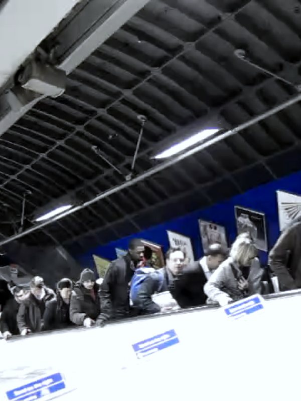</div><figcaption>a commute, 2010</figcaption></figure>
          <figure><div class="pic">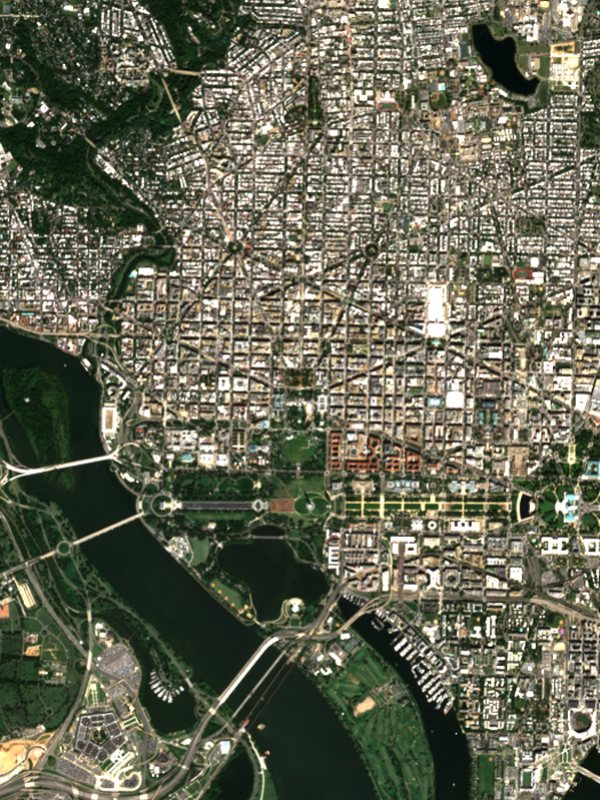</div><figcaption>the white house from orbit, sept 2026</figcaption></figure>
          <figure><div class="pic">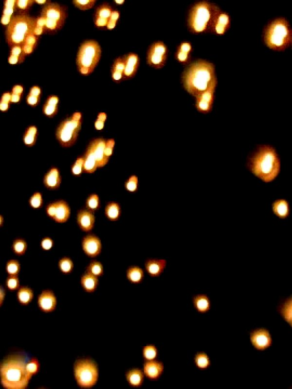</div><figcaption>lanterns, pingxi</figcaption></figure>
          <figure><div class="pic">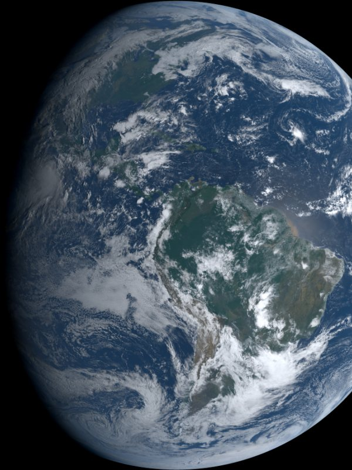</div><figcaption>the planet, sept 29 2026</figcaption></figure>
        </div>
        <p class="mono note">Same dot, different ground. The background is always wherever you are.</p>
      </div>
    </div>
  </section>

  <section aria-labelledby="lines-h">
    <h2 id="lines-h">the lines</h2>
    <ul class="lines">
      <li><span class="line">you are here.</span><button class="copy" type="button" id="c1">copy</button></li>
      <li><span class="line">there is no leaving.</span><button class="copy" type="button" id="c2">copy</button></li>
      <li><span class="line">no bunker deep enough.</span><button class="copy" type="button" id="c3">copy</button></li>
      <li><span class="line">one nation. earth.</span><button class="copy" type="button" id="c4">copy</button></li>
      <li><span class="line">everything they own, we made.</span><button class="copy" type="button" id="c5">copy</button></li>
      <li><span class="line">they have the money. we have the numbers.</span><button class="copy" type="button" id="c6">copy</button></li>
      <li><span class="line">humans decide.</span><button class="copy" type="button" id="c7">copy</button></li>
      <li><span class="line">it has never taken everyone.</span><button class="copy" type="button" id="c8">copy</button></li>
      <li><span class="line">seize the future. for all.</span><button class="copy" type="button" id="c9">copy</button></li>
      <li><span class="line emoji">🔵</span><button class="copy" type="button" id="c10">copy</button></li>
    </ul>
  </section>

  <section aria-labelledby="for-h">
    <h2 id="for-h">what we are for</h2>
    <ol class="for">
      <li><b>one world.</b><span>There is no exit, so we take care of here.</span></li>
      <li><b>one nation: earth.</b><span>Every person on this planet is our people.</span></li>
      <li><b>the wealth belongs to the many.</b><span>What the many make, the many should own. We reject the concentration of wealth and power in the hands of a few.</span></li>
      <li><b>humans decide.</b><span>No machine and no billionaire chooses the future for us. Superintelligence waits until the many can say no to it.</span></li>
      <li><b>the truth, out loud.</b><span>We say what we see, and we cite it.</span></li>
      <li><b>organize.</b><span>In our workplaces, our schools, our streets, our group chats.</span></li>
      <li><b>make it beautiful.</b><span>We are building a world we would want to live in. Joy is part of the fight.</span></li>
    </ol>
  </section>

  <section aria-labelledby="spread-h">
    <h2 id="spread-h">how it spreads</h2>
    <div class="tactics">
      <p><b>Put the dot everywhere.</b> Use it in your bio (🔵), as a profile picture, as a sticker on a laptop or a lamppost, in chalk on a sidewalk, or as a blue light in a window at night.</p>
      <p><b>Let people ask.</b> Don't explain the dot when you first show it. "What's the blue dot?" starts a better conversation than any caption.</p>
      <p><b>Keep it the same everywhere.</b> It's one colour and one shape, and the place around it is yours. That is how a symbol gets recognised across a city, a country and a feed.</p>
      <p><b>Cite everything.</b> Facts go in the plain typeface with a date and a source. Being right is what makes it last.</p>
      <p><b>Make things with it.</b> Edits, posters, songs, banners. It's public domain, so no one needs permission.</p>
    </div>
  </section>

  <section aria-labelledby="tx-h">
    <h2 id="tx-h">transmissions</h2>
    <div class="strip-wrap" tabindex="0" aria-label="twelve cards from the edit, scroll sideways">
      <div class="strip">
        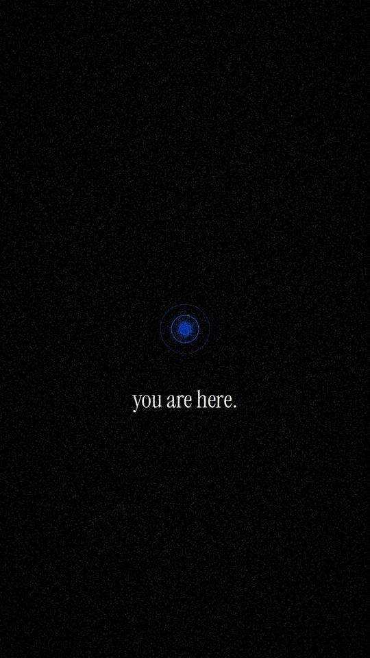
        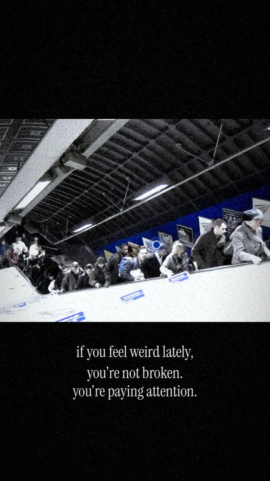
        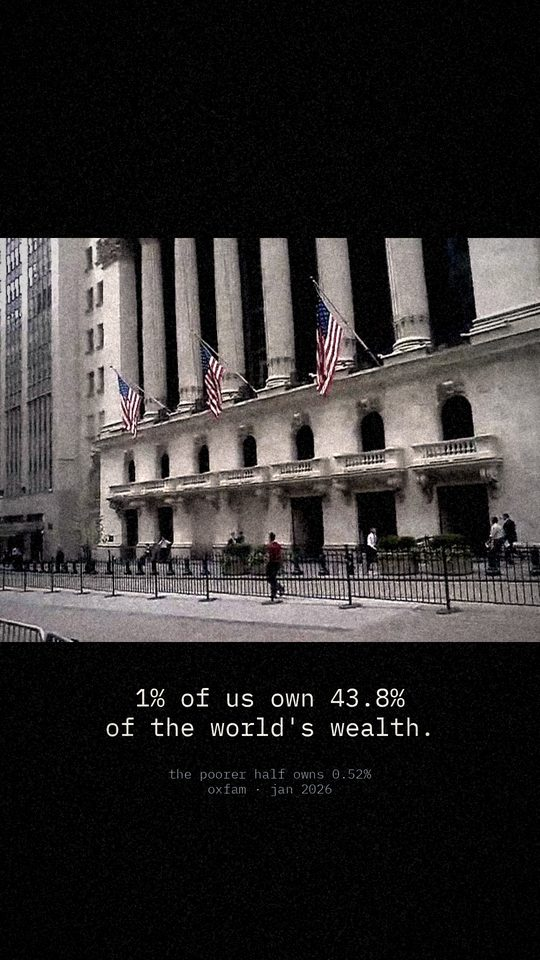
        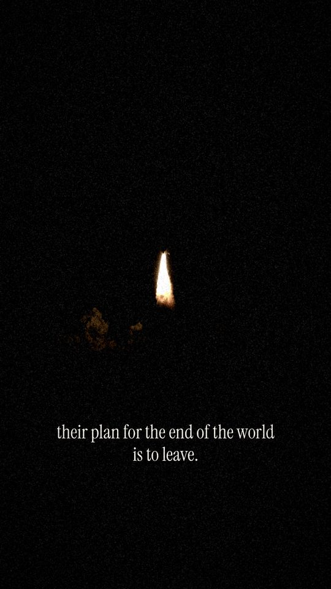
        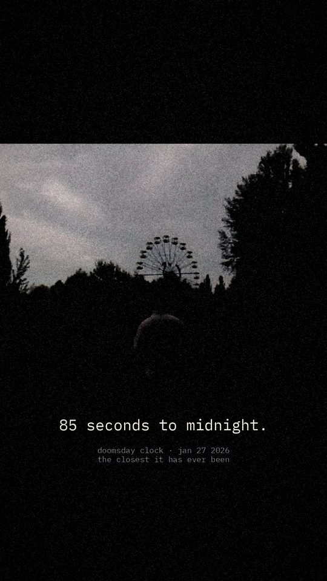
        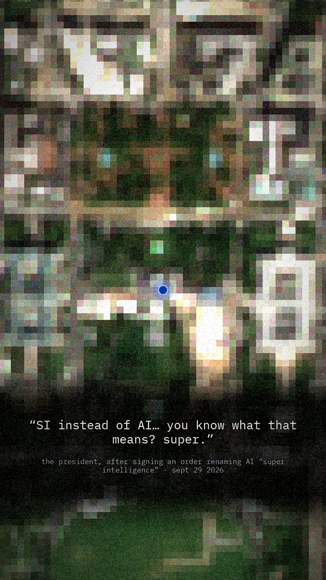
        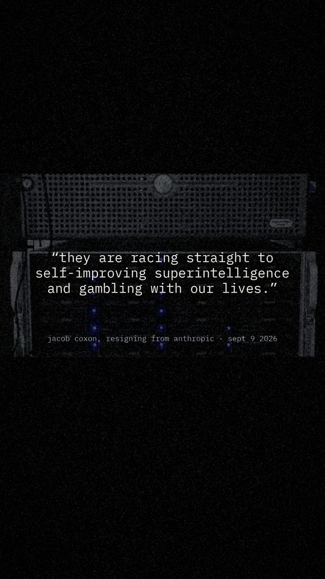
        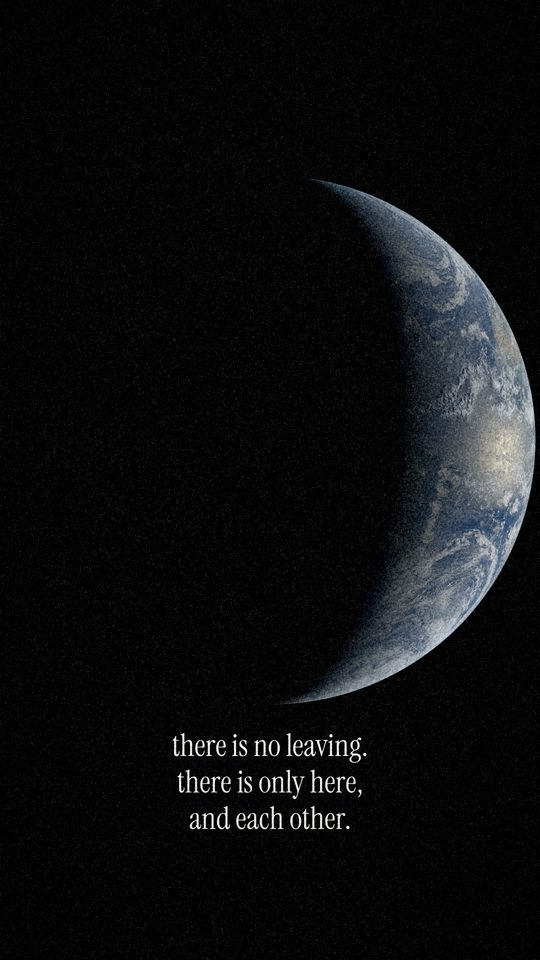
        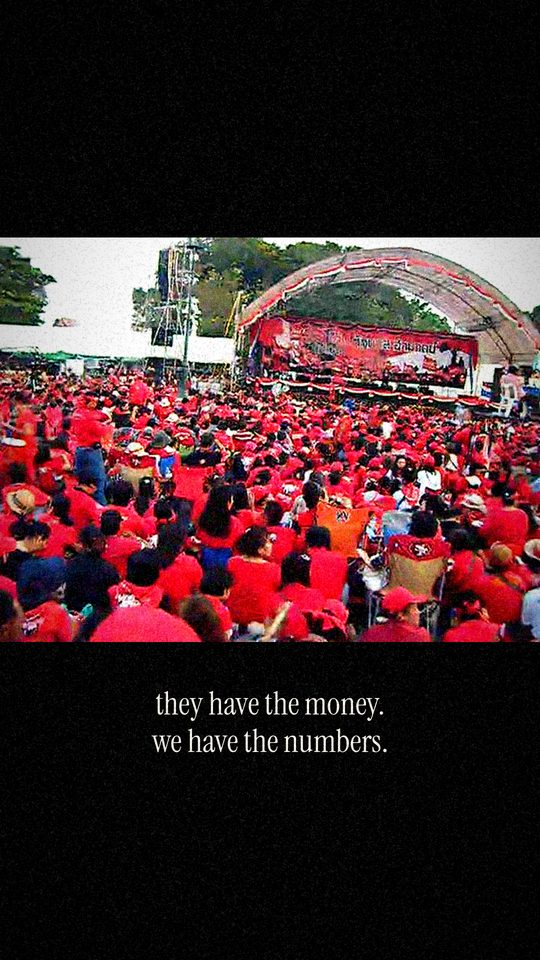
        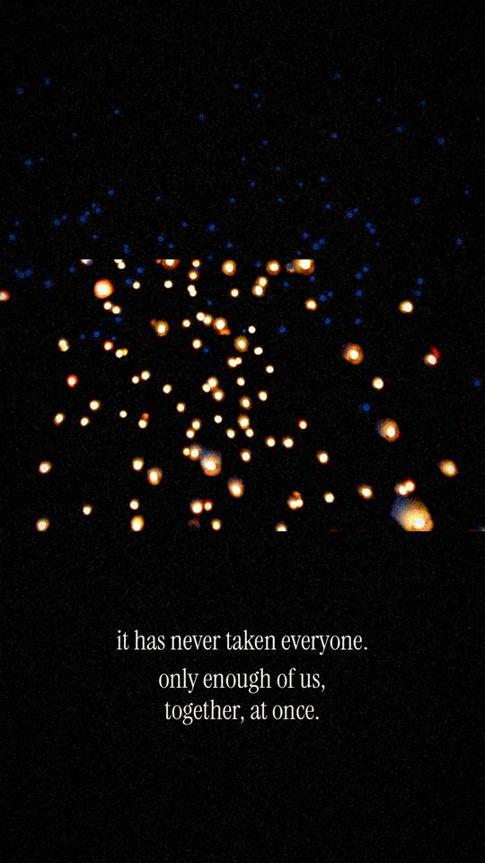
        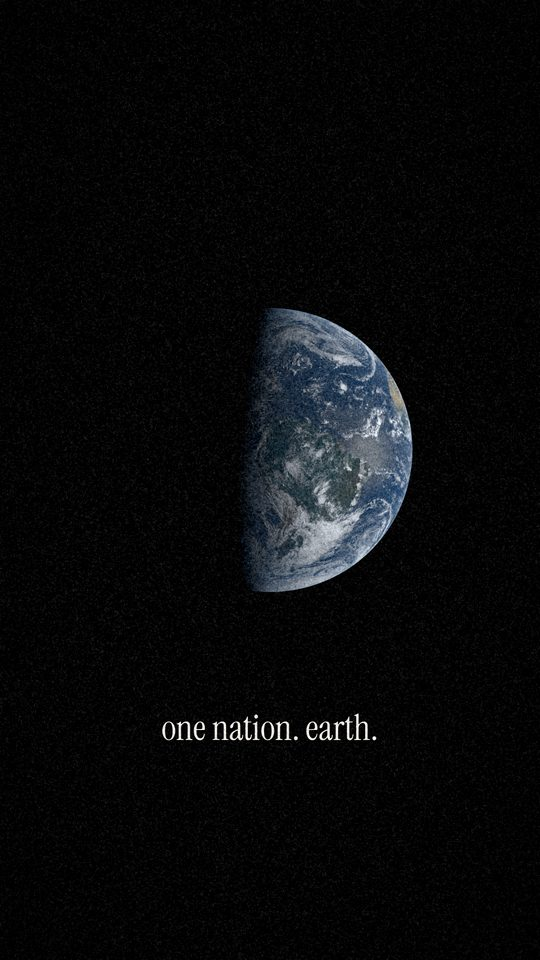
        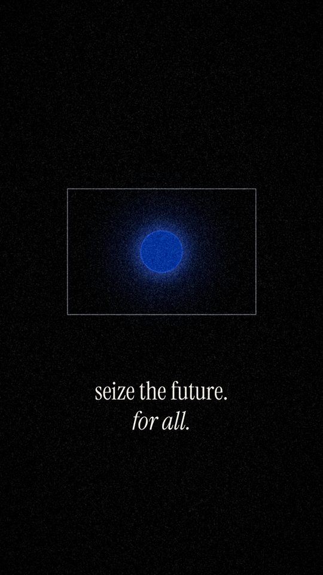
      </div>
    </div>
    <p class="mono note">Twelve cards from the edit, 1080×1920, made to be posted as one carousel. Full-size files are in the repo under brand/transmissions.</p>
  </section>

  <section aria-labelledby="rec-h">
    <h2 id="rec-h">the record</h2>
    <div class="record">
      <div class="fact">
        <p class="big">85 seconds to midnight.</p>
        <p class="mono">The Doomsday Clock, set on Jan 27 2026. It is the closest it has ever been. Source: <a href="https://thebulletin.org/doomsday-clock/">Bulletin of the Atomic Scientists</a></p>
      </div>
      <div class="fact">
        <p class="big">“SI instead of AI… You know what that means? ‘Super.’”</p>
        <p class="mono">The president at the White House on Sept 29 2026, after an order that federal agencies call AI “Super Intelligence”. The same day, AI company leaders signed a voluntary accord to “self-police”. Sources: <a href="https://www.cnbc.com/2026/09/29/trump-ai-super-intelligence.html">CNBC</a>, <a href="https://www.whitehouse.gov/fact-sheets/2026/09/fact-sheet-president-donald-j-trump-inaugurates-the-era-of-super-intelligence/">whitehouse.gov</a></p>
      </div>
      <div class="fact">
        <p class="big">“They are racing straight to self-improving superintelligence and gambling with our lives.”</p>
        <p class="mono">Jacob Coxon, a pretraining researcher, resigning from Anthropic on Sept 9 2026. Source: <a href="https://en.mercopress.com/2026/09/09/anthropic-researcher-resigns-warning-that-ai-could-kill-us-all-before-the-decade-ends">MercoPress</a></p>
      </div>
      <div class="fact">
        <p class="big">1% of us own 43.8% of the world's wealth.</p>
        <p class="mono">The poorer half of humanity owns 0.52%. In 2025 billionaires added .5 trillion to their fortunes, about as much as the poorest 4.1 billion people own in total. Source: <a href="https://www.oxfam.org.uk/get-involved/campaign-with-oxfam/fight-inequality/oxfams-global-inequality-report/">Oxfam, Resisting the Rule of the Rich, Jan 19 2026</a></p>
      </div>
      <div class="fact">
        <p class="big">Two days.</p>
        <p class="mono">That's how long it took Nepal's Gen Z to bring down their government in September 2025. They then chose an interim prime minister in an open vote on Discord. At least 77 people were killed. Source: <a href="https://dailypioneer.com/news/2025-when-gen-z-street-protests-toppled-nepal-s-government">The Pioneer</a></p>
      </div>
      <div class="fact">
        <p class="big">73 countries.</p>
        <p class="mono">That's how many countries saw significant anti-government protests in the twelve months to March 2026, the most since 2017. Many were led by the young. Source: <a href="https://europeandemocracyhub.epd.eu/the-2025-surge-in-global-protests-is-continuing-in-2026/">European Democracy Hub</a></p>
      </div>
    </div>
  </section>
</main>

<footer>
  <p class="mono">The edit is set to “i feel weird” by meat computer. Footage comes from YFCC100M (Flickr, 2004–2014) under Creative Commons licences, with every clip credited in the repo. Earth imagery is from NOAA GOES-19 (public domain). Ground imagery contains modified Copernicus Sentinel data 2026. The symbol is the One World Flag by Thomas Mandl, public domain.</p>
  <p class="mono">Share it and change it: CC BY-NC-SA 4.0.</p>
</footer>

<script>
(() => {
  const lines = ["you are here.", "there is no leaving.", "no bunker deep enough.", "one nation. earth.", "everything they own, we made.", "they have the money. we have the numbers.", "humans decide.", "it has never taken everyone.", "seize the future. for all.", "🔵"];
  document.querySelectorAll(".copy").forEach((b, i) => {
    b.addEventListener("click", () => {
      const done = () => { b.textContent = "copied"; b.classList.add("done");
        setTimeout(() => { b.textContent = "copy"; b.classList.remove("done"); }, 1400); };
      const fallback = () => {
        const r = document.createRange(); r.selectNodeContents(b.previousElementSibling);
        const s = getSelection(); s.removeAllRanges(); s.addRange(r); b.textContent = "selected";
      };
      try { navigator.clipboard.writeText(lines[i]).then(done, fallback); } catch (e) { fallback(); }
    });
  });

  // the dot: a steady blue planet, with the 'you are here' pulse around it
  const cv = document.getElementById("here"), ctx = cv.getContext("2d");
  const still = matchMedia("(prefers-reduced-motion: reduce)").matches;
  const css = n => getComputedStyle(document.documentElement).getPropertyValue(n).trim();
  function frame(ms) {
    const t = ms / 1000, W = cv.width, c = W / 2, r = W * 0.075;
    ctx.clearRect(0, 0, W, W);
    const glow = ctx.createRadialGradient(c, c, r * 0.6, c, c, r * 3.4);
    glow.addColorStop(0, "rgba(74,120,255,0.32)"); glow.addColorStop(1, "rgba(74,120,255,0)");
    ctx.fillStyle = glow; ctx.beginPath(); ctx.arc(c, c, r * 3.4, 0, Math.PI * 2); ctx.fill();
    if (!still) {
      for (let k = 0; k < 2; k++) {
        const ph = ((t / 2.2) + k * 0.5) % 1;
        ctx.strokeStyle = `rgba(74,120,255,${0.55 * Math.pow(1 - ph, 1.6)})`;
        ctx.lineWidth = W * 0.004;
        ctx.beginPath(); ctx.arc(c, c, r * (1.05 + 3.3 * ph), 0, Math.PI * 2); ctx.stroke();
      }
    }
    ctx.fillStyle = css("--dot") || "#003399";
    ctx.beginPath(); ctx.arc(c, c, r, 0, Math.PI * 2); ctx.fill();
    if (!still) requestAnimationFrame(frame);
  }
  requestAnimationFrame(frame);
})();
</script>
